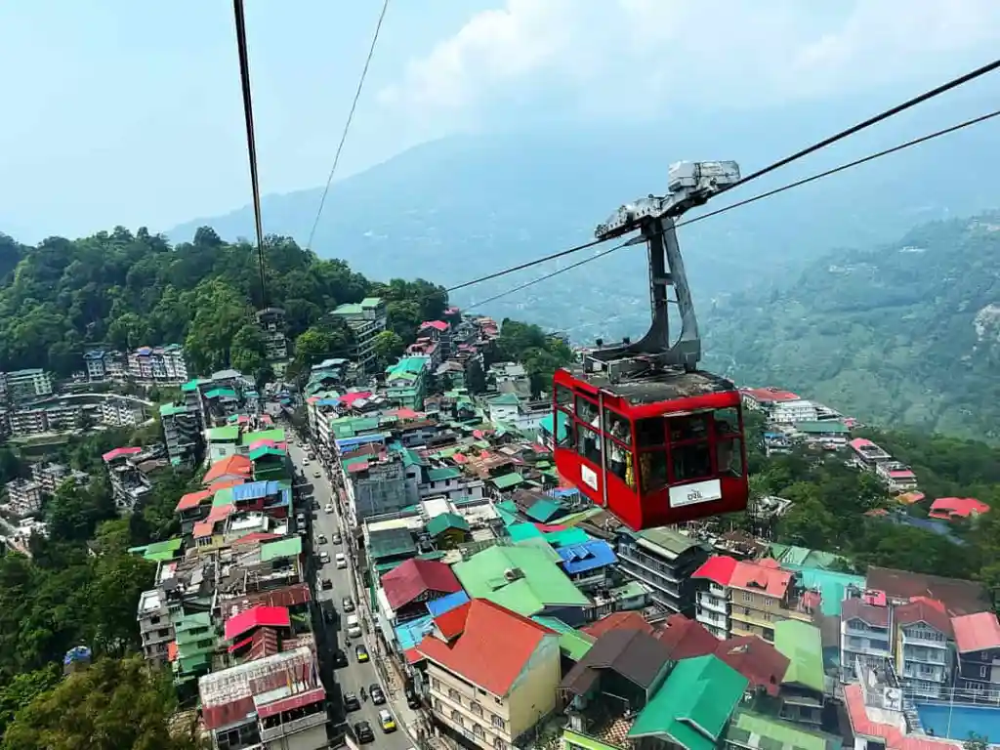
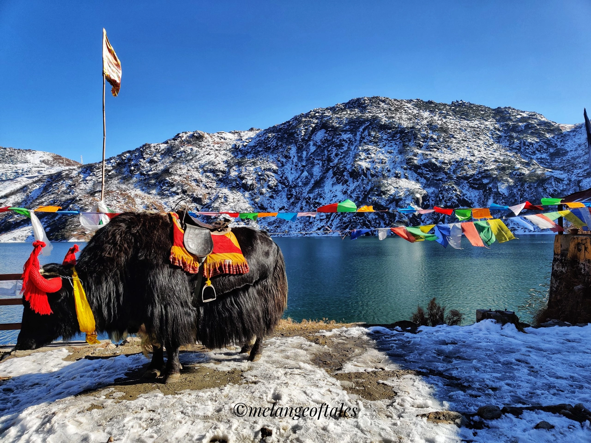
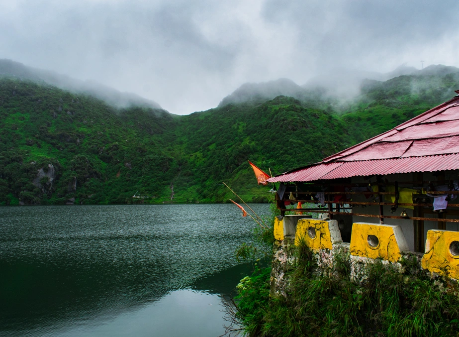
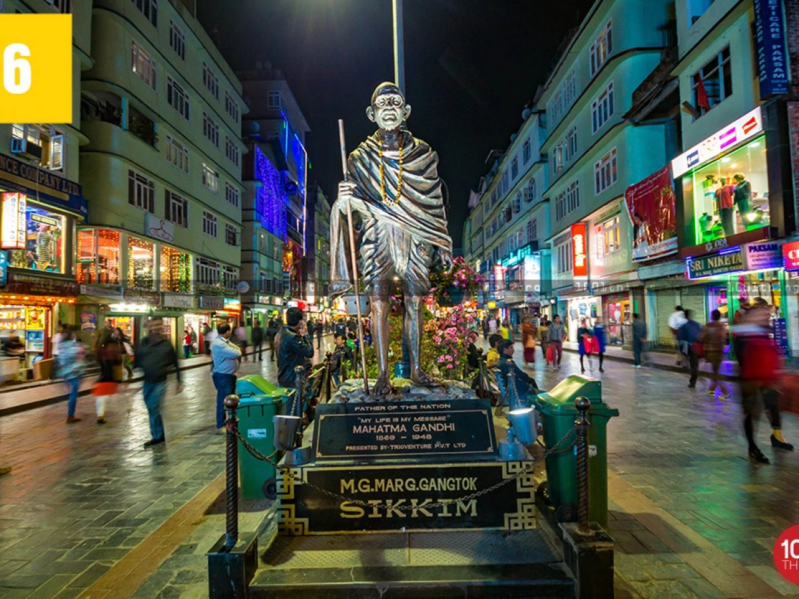
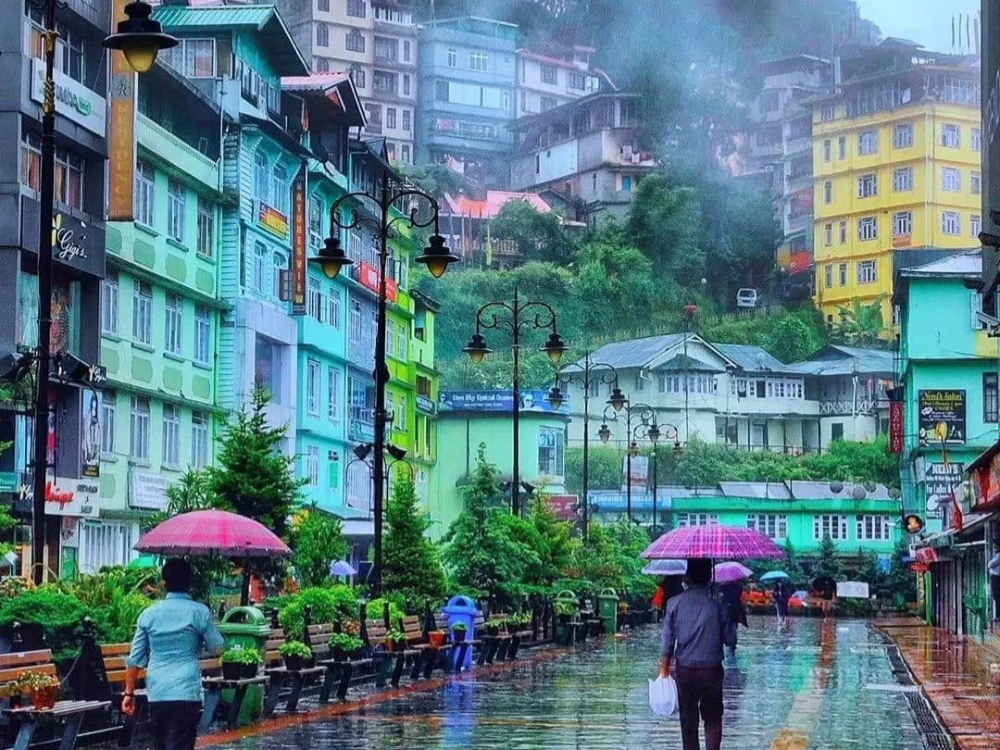

Nestled amidst the majestic Eastern Himalayas, Gangtok is one of the most beautiful hill stations and cultural destinations in Northeast India. Surrounded by snow-covered mountains, Buddhist monasteries, waterfalls, rivers, forests, and breathtaking valleys, Gangtok attracts travelers from all over the world throughout the year. As the capital city of Sikkim, Gangtok perfectly blends modern urban charm with peaceful Himalayan beauty. The city is famous for its clean roads, scenic viewpoints, monasteries, adventure activities, vibrant MG Marg, and stunning mountain landscapes overlooking Mount Kanchenjunga. Whether you are planning a honeymoon trip, family vacation, backpacking adventure, or a peaceful mountain escape, Gangtok offers unforgettable experiences filled with natural beauty, spirituality, culture, and adventure.
Gangtok has a rich cultural and spiritual history deeply influenced by Tibetan Buddhism and Himalayan traditions. Historically, the region was an important stop on ancient trade routes connecting India with Tibet. Over the years, Gangtok developed into the cultural and administrative center of Sikkim while preserving its monasteries, traditions, and peaceful environment. After Sikkim became a part of India in 1975, Gangtok rapidly evolved into one of the most popular tourist destinations in Northeast India. Today, Gangtok remains famous for its blend of natural beauty, spirituality, modern infrastructure, and traditional Sikkimese culture.
Tsomgo Lake, also known as Changu Lake, is one of the most famous attractions near Gangtok. Located at a high altitude and surrounded by snow-covered mountains, the lake changes colors with seasons and offers mesmerizing Himalayan scenery. During winter, the lake often freezes completely, creating magical snow landscapes.


Nathula Pass is one of the highest motorable mountain passes in India and a major attraction in Sikkim. Located near the Indo-China border, Nathula offers breathtaking snow-covered landscapes and thrilling Himalayan road trip experiences. The route to Nathula Pass passes through stunning mountain roads, waterfalls, and valleys, making the journey unforgettable.
MG Marg is the heart of Gangtok and one of the cleanest and most vibrant tourist streets in India. Filled with cafés, restaurants, shops, bakeries, hotels, and local markets, MG Marg is perfect for evening walks and shopping. The lively atmosphere and mountain backdrop make it one of the most popular places in Gangtok.


Rumtek Monastery is one of the largest and most important Buddhist monasteries in Sikkim. Surrounded by peaceful hills and forests, the monastery is famous for its spiritual atmosphere, Tibetan architecture, and beautiful surroundings. Visitors come here to experience peace, meditation, and Buddhist culture.
Ganesh Tok and Tashi View Point offer panoramic views of Gangtok city and the snow-covered Kanchenjunga mountain range. These viewpoints are among the best places for sunrise photography and scenic Himalayan views.
Baba Mandir is a famous shrine located near Nathula Pass dedicated to Baba Harbhajan Singh, an Indian Army soldier believed to spiritually protect the region. The temple is one of the most visited attractions near Gangtok.
The Gangtok Ropeway offers stunning aerial views of the city, valleys, mountains, and colorful buildings. It is one of the best activities for tourists wanting panoramic views of Gangtok from above.
Summer is one of the best times to visit Gangtok with pleasant weather, clear skies, and comfortable sightseeing conditions.
Monsoon transforms Gangtok into a lush green paradise with clouds floating through the mountains.
Winter brings snowfall to nearby high-altitude areas like Nathula Pass and Tsomgo Lake, making Gangtok extremely beautiful during this season.
Gangtok is one of the best adventure destinations in Northeast India offering thrilling mountain experiences.
Gangtok offers delicious Sikkimese, Tibetan, and Northeast Indian cuisine along with modern cafés and bakeries. Popular dishes include:
The cafés and restaurants of MG Marg are especially popular among tourists and food lovers.
Gangtok is well connected by road from Siliguri, Darjeeling, and nearby Northeast Indian cities. The scenic mountain drive is one of the most beautiful journeys in India.
The nearest major railway station is New Jalpaiguri (NJP) Railway Station in West Bengal.
The nearest airport is Pakyong Airport, while Bagdogra Airport offers better connectivity from major Indian cities.
Planning a Sikkim trip becomes smooth and memorable with Wander & Wonder Travels. Our carefully designed Sikkim packages cover Gangtok, Tsomgo Lake, Nathula Pass, North Sikkim, Lachung, Yumthang Valley, and other beautiful Himalayan destinations.
Why Choose Wander & Wonder Travels?
The best time to visit Gangtok is March to June for pleasant weather and October to February for snowfall experiences in nearby areas like Tsomgo Lake and Nathula Pass.
A 4 to 6 day trip is ideal to explore Gangtok city, Tsomgo Lake, Nathula Pass, MG Marg, monasteries, and nearby attractions like North Sikkim.
Snowfall is not common in Gangtok city, but nearby high-altitude areas such as Tsomgo Lake, Nathula Pass, and Zero Point receive snowfall during winter.
Gangtok is famous for its Himalayan views, Nathula Pass, Tsomgo Lake, monasteries, MG Marg, ropeway ride, and clean mountain city environment.
Yes, Gangtok is one of the safest tourist destinations in India, popular among families, couples, and solo travelers.
Yes, Indian tourists require a special permit to visit Nathula Pass, which is usually arranged through registered travel agents or tour operators in Gangtok.
You must try momos, thukpa, phagshapa, gundruk soup, sel roti, and traditional Sikkimese tea.
The nearest airport is Bagdogra and nearest railway station is New Jalpaiguri (NJP). From there, taxis and shared cabs are available to Gangtok.
If you are dreaming of exploring snow-covered mountains, monasteries, lakes, and the magical beauty of Sikkim, Wander & Wonder Travels is your perfect travel partner for unforgettable Himalayan adventures.
Explore Sikkim Packages → ```